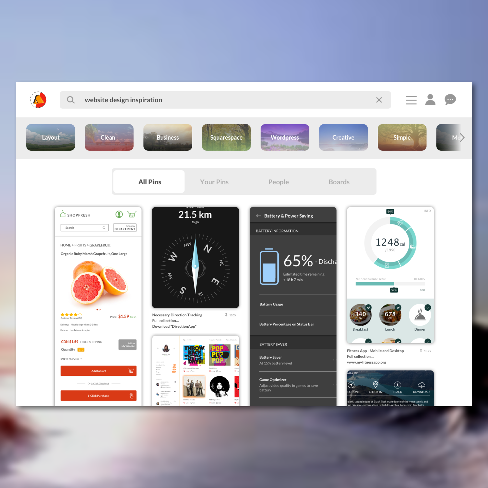

Day 77 - Pinterest, is that you?
Everyday I try to look for design inspirations on both Google and Pinterest. Then today, it hit me when I searched up "website design inspiration" on Pinterest. Why don't I try to create the page I'm looking at right now? Right then, I knew I just had to try it out. Honestly, it's not the best UI design I've done, mainly due to the fact my pictures are not as aesthetically pleasing as those on Pinterest.
As I was creating this, I found that Pinterest's UI is very simple and clean. It's surprising that it has all the functions available for the user to navigate around the website. The difference of white and grey for the background is barely noticeable, yet it works so well.
Another thing that I noticed on Pinterest's screen is the gradient for each of the words that the user can add to their search. In this example, I have words such as Layout, Clean, Business, etc. It's barely noticeable, but it plays such a big difference if it wasn't added.
Through the recreation of this design, I've learned a lot of things. There are many design aspects that one would miss as a user, however, if you look closely at the finer details, you can tell that the designer worked hard to create it. This, I find, is where design should not be taken lightly, because if it was, the finer details will be gone, then the webpage will be messy and unorganized. This leads to unhappy users.
Having said that, I do realize my "copy" of Pinterest is definitely nowhere as good as the current Pinterest page. It is less clean and less organized. I know that there are many finer details I have yet to discover to include in my Pinterest design.